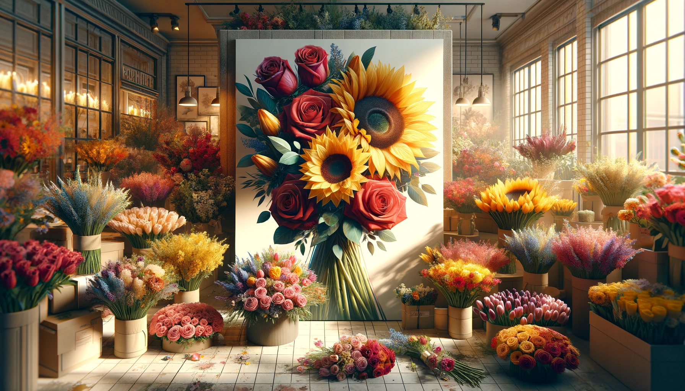
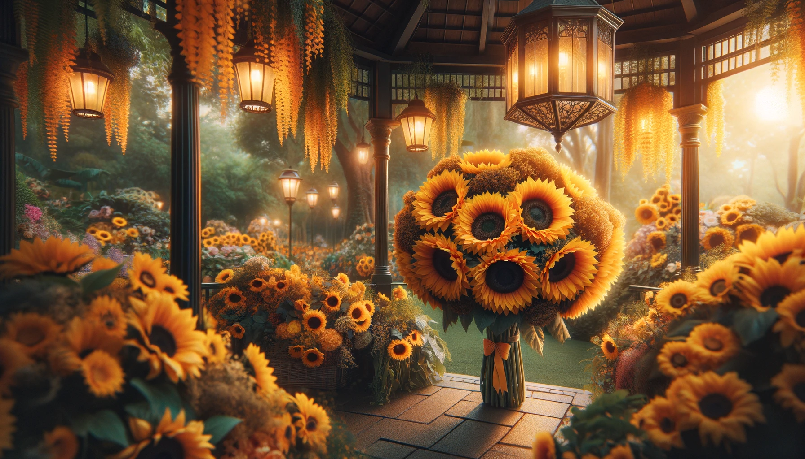
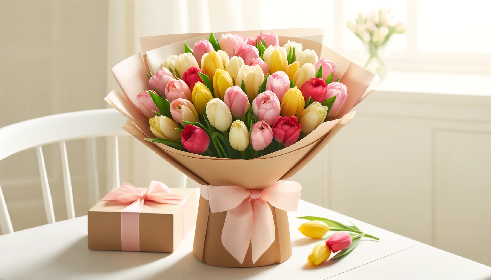

Meet The Hiyas Favorites Our Top 3 Best-Selling Flowers
Published on April 19, 2024 | Hiyas Flowershop
"Meet The Hiyas Favorites: Our Top 3 Best-Selling Flowers" showcases a curated selection of the most popular and cherished floral arrangements. Here’s a concise description of each bouquet, highlighting roses, sunflowers, and tulips:

Sun-Kissed Splendor
Bursting with energy and brightness, this bouquet is a delightful array of vibrant sunflowers. Their golden hues are perfectly complemented by a few sprigs of greenery, making it an ideal choice for brightening any space or occasion with a touch of sunny cheer.

Romantic Red Roses
A timeless classic, this bouquet features lush, velvety red roses, elegantly arranged to convey deep affection and love. Each rose is carefully selected to ensure a stunning presentation, ideal for romantic occasions like anniversaries or to simply express love.

Spring time Tulips
This charming bouquet consists of a colorful mix of tulips in shades of pink, yellow, and red, representing happiness and grace. Wrapped in a simple yet elegant paper, it brings a cheerful and sophisticated touch to any setting, making it perfect for celebrations or as a thoughtful gift.